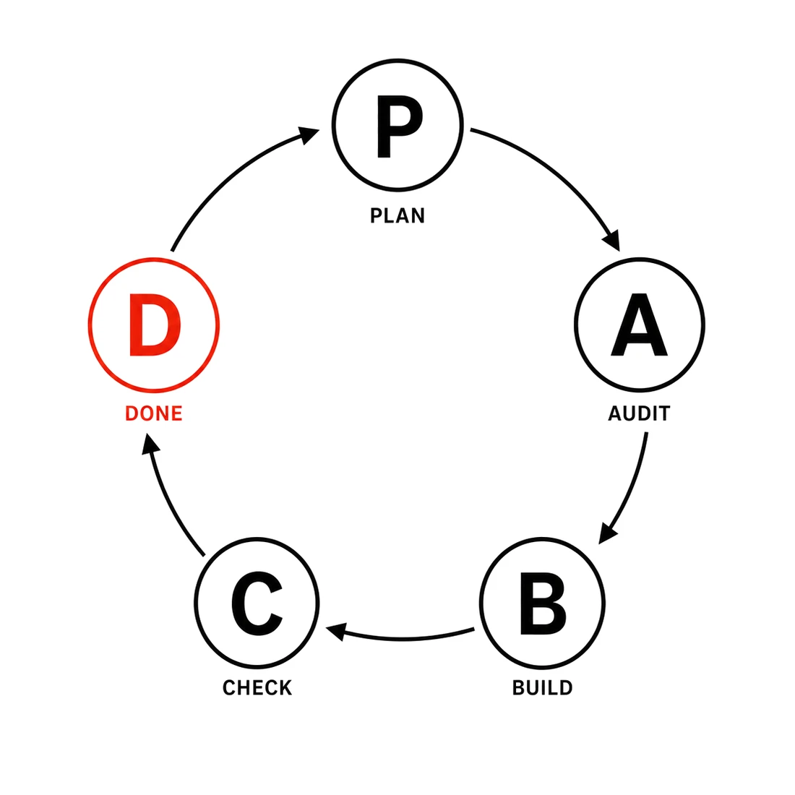

Principled. Adaptive. 구조와 피드백으로 더 나은 에이전트를 만든다.
01 — Doctrine
PABCD는 에이전트의 작업을 Plan, Audit, Build, Check, Done 다섯 상태의 유한 상태 머신 위에 올린다. 상태 전이는 선언이 아니라 attestation — 증거를 첨부한 명시적 전이 명령 — 으로만 일어난다.
"다 했다"는 말은 상태가 아니다. 계획 없는 빌드, 감사 없는 계획, 검증 없는 완료 선언은 전이 자체가 거부된다. 이 규율은 특정 모델이나 호스트 CLI에 묶이지 않은 에이전트 중립(agent-neutral) 규칙으로 관리되며, 각 런타임은 자신의 FSM/위임 표면에 이를 어댑트한다.

| Phase | 진입 조건 | 종료 게이트 | |
|---|---|---|---|
| P | Plan | 작업 시작 또는 리플랜 | diff-level 계획 + loop-spec 헤더 |
| A | Audit | 계획 확정 | 독립 리뷰어 blocker 0건 |
| B | Build | 감사 통과 | 스코프 내 구현 완료 |
| C | Check | 빌드 완료 | 실행 증거(테스트 · 스크린샷) |
| D | Done | 검증 통과 | attest 증거 첨부 전이 |
Design Philosophy
PABCD는 capability-responsive 하네스다. 에이전트의 맥락적 엔지니어링 판단을 심각도 등급이 있는 규율 텍스트로 표현하고, 기계적 강제는 되돌릴 수 없는 불변식에만 쓴다. 오늘의 모델 한계를 내일의 오케스트레이션에 얼리지 않으면서, 자연어 준수를 보안 경계로 착각하지도 않는다.
| 구분 | PABCD가 하는 일 |
|---|---|
| 기계적 강제 3개 |
FSM 상태 영속 (attestation), 조기 종료 차단 (Stop hook), 완료 검증 (goalplan gate) |
| 규율 텍스트 수백 개 |
C0-C5 분류, anti-slop 체크리스트, 아키텍처 경계, 보안 추론, 리뷰 자세 — 에이전트가 읽고 따르는 지식 |
| 심각도 스펙트럼 | STRICT / DEFAULT / HEURISTIC / STYLE_SAMPLE — 더 똑똑한 모델이 더 세밀한 판단을 행사할 수 있는 구간 |
hook 과적합의 문제. 모든 턴에 규칙을 주입하고 모든 출력을 파싱하는 하네스는 모델이 멍청할 때 효과적이다. 하지만 모델이 규칙을 이미 이해하면 오버헤드만 남는다. AGENTS.md 연구(arXiv:2602.11988)는 컨텍스트 파일이 에이전트 행동을 실제로 바꾸지만, 추론 비용이 ~20% 증가함을 보여준다. 규칙이 많을수록 비용이 올라가므로 규칙은 한계 가치가 높아야 한다.
자체 루프의 문제. 에이전트 출력을 다른 LLM이 검사하고 그 검사를 또 검사하는 방식은 비용이 지수적이다. 검사하는 모델도 같은 맹점을 공유하므로 독립적 신호가 아니다. PABCD는 대신 외부 증거(테스트, diff, 스크린샷)를 사용한다.
모델 능력에 비례하는 효과. SIFo(arXiv:2406.19999)는 더 새롭고 큰 모델이 복잡한 지시 시퀀스를 유의미하게 더 잘 따름을 보여준다. 같은 규율 텍스트가 GPT-4 수준에서 80%를 따르면, sol 수준에서는 거의 전부를 따르면서 규칙의 의도까지 이해한다. 하네스는 바뀌지 않았는데 효과가 올라간다.
정직한 한계. 이 접근이 완벽하지는 않다. 자연어 규칙은 보안 경계가 될 수 없다(Greshake et al.). 장기 준수는 컨텍스트 길이와 함께 저하된다(MathIF). 규율 텍스트는 순종적이지만 비생산적인 작업을 유발할 수 있다. 그래서 기계적 강제가 3개 존재하고, 보안 정책은 텍스트와 기계의 이중 경계로 운영된다.
정식화. 판단은 모델 능력이 복리로 쌓이는 곳에 놓고, 불변식은 확률적 판단이 용납되지 않는 곳에 놓는다. 이것이 "느슨한 하네스가 단단한 하네스를 이긴다"보다 정직하고, 근거가 실제로 지지하는 주장이다.
AGENTS.md 연구(arXiv:2602.11988)의 핵심 발견은 이렇다: 레포에 놓인 정적 컨텍스트 파일은 에이전트 행동을 실제로 바꾸지만, 추론 비용이 ~20% 증가하고 작업 성공률은 유의미하게 올라가지 않았다. 에이전트는 시킨 대로 더 많이 탐색하고, 더 많이 테스트하고, 언급된 도구를 더 자주 썼다. 하지만 그 추가 순종이 결과를 개선하지 못했다 — 순종적 낭비(obedient waste)다.
PABCD는 이 문제를 세 가지 구조적 차이로 해결한다:
| AGENTS.md (정적 컨텍스트) | PABCD 스킬 (워크플로우 중심) | |
|---|---|---|
| 로딩 | 매 턴마다 전체 파일이 컨텍스트에 포함 | trigger/surface 기반 점진 로딩. C0/C1은 references를 건너뛴다. 타이포 수정에 OWASP를 읽지 않는다. |
| 구식 정보 | 파일이 업데이트되지 않으면 구식 정보가 그대로 주입 | last-verified 날짜 스탬프 + 모든 외부 의존 결정에 search 스킬 경유 강제. "기억에 의존하지 말고 현재 문서를 확인하라." |
| 깊이 조절 | 없음 — 같은 지시가 모든 작업에 적용 | C0-C5 분류기가 작업 위험도에 비례하는 프로세스 깊이를 선택. 같은 스킬 세트가 타이포부터 인증 시스템까지 다른 깊이로 적용된다. |
| 모듈 경계 | 단일 파일, 내부 구조 없음 | 13개 스킬 × 모듈 references. dev-backend은 C2에서 crud-api.md 하나로 충분하고, C3+에서만 api-design.md와 architecture.md를 로드한다. |
| 외부 검증 | 파일 내용이 곧 진실 | search 스킬의 "snippets are not evidence" 불변식. Tier 1(발견) → Tier 2(원문 증명) 분리. 스킬 내 주장도 외부 검증 대상이다. |
요약하면: AGENTS.md는 에이전트에게 읽을 책을 주는 것이고, PABCD 스킬은 에이전트가 지금 하는 작업에 맞는 장(chapter)만 펼쳐주는 것이다. 순종적 낭비를 피하려면 규율의 한계 가치가 높아야 하고, 그건 관련 없는 규율을 로드하지 않는 것에서 시작한다.
Why This Structure
| LLM 구조적 실패 | PABCD 대응 메커니즘 | 근거 |
|---|---|---|
| 통계적 수렴 | Diverge-Kill-Mutate 프로세스 + severity 등급(HEURISTIC/STYLE_SAMPLE)으로 판단 여지 확보 | arXiv:2501.19361, CHI 2026 |
| 시각적 피드백 부재 | visual-verification.md: 헤드리스 브라우저 스크린샷 강제 — 정적 파싱은 증거가 아님 | arXiv:2603.27249 (AI slop) |
| 즉시 실행 편향 | C0-C5 분류기 + Interview(I) 단계 — 위험도를 분류한 뒤에만 프로세스 깊이를 결정 | arXiv:2602.11988 (AGENTS.md) |
| 환각과 구식 지식 | search 스킬의 Tier 1/2 증명 사다리 + last-verified 스탬프 + 외부 검증 경유 강제 |
arXiv:2406.10279 (slopsquatting), arXiv:2604.09515 |
03 — 06 · Documents
07 — References
하네스 설계와 위임 경제를 지지하는 15편의 논문. 전부 Tier-2(원문 초록 대조) 검증을 통과했고, 스니펫 해석이 초록과 어긋난 항목은 원장에 강등 기록을 남겼다.